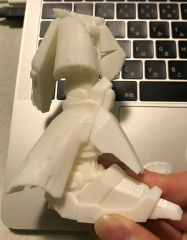
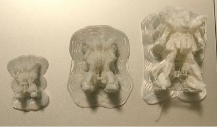
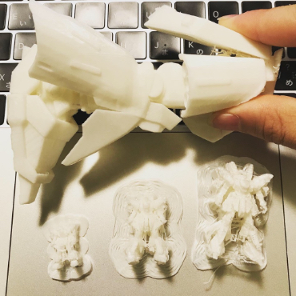

クロステック応用Ⅱ
3Dprinterで出してみた
自分は、3Dprinterで自分の好きなガンダムをどんなふうに出るか気になったので出してみました。
初めは20分以内にできるぐらいに調整して出力してみましたが小さすぎて細かなところが綺麗にできませんでした。

そこで自分は大きさの違うものを作ってどのくらいならある程度の細部まで綺麗にできるのかやってみたくなりやってみました。
一番初めに出力したのはパソコンからダウンロードしたデータの50%のスケールのもので次に出したのは75%その次に100%のスケールのものを出しました。
他にもパーツをバラで出力できるデータがあったので足だけまず出力してみました。

↓比べてみた写真

